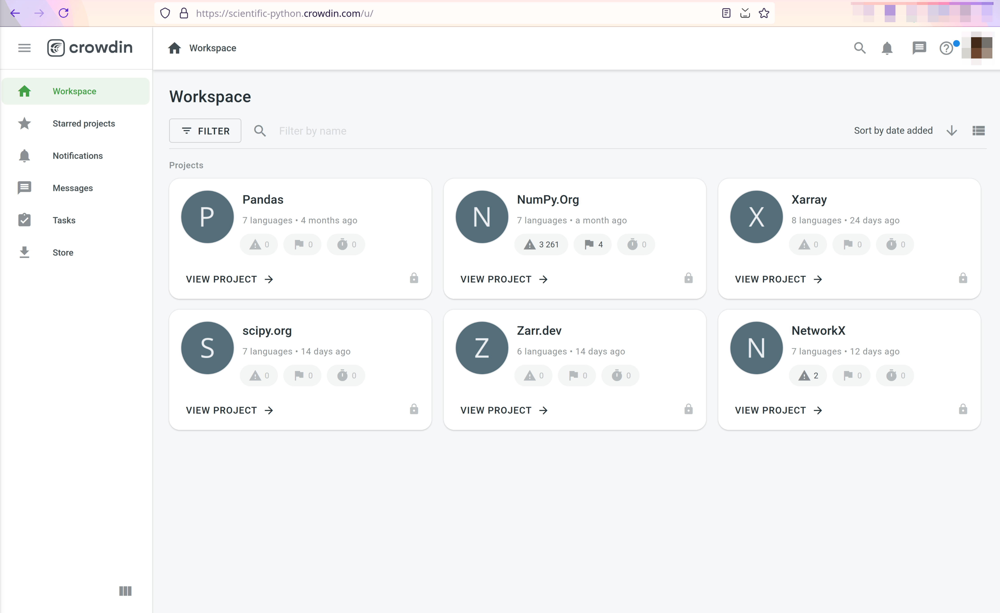
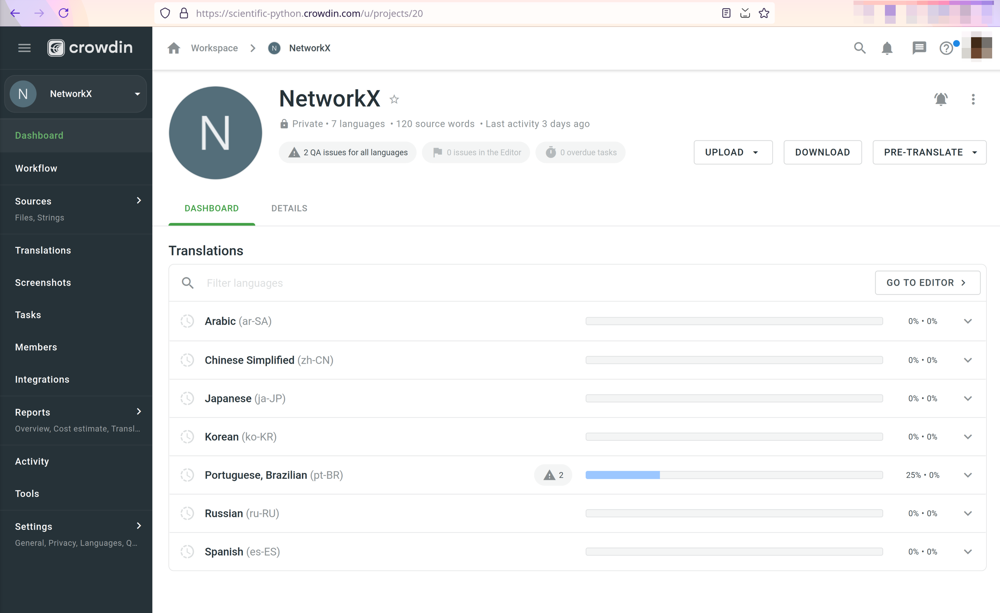
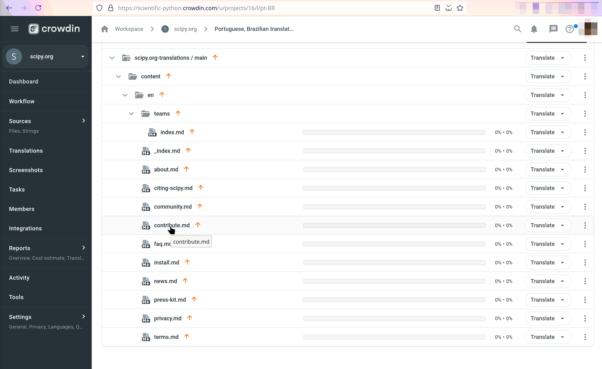
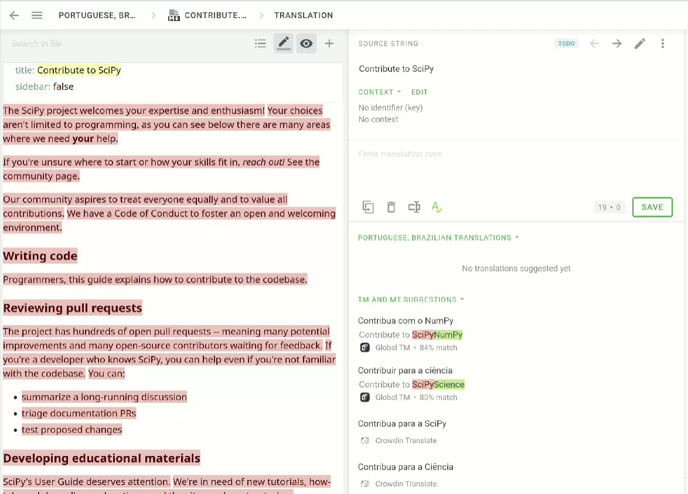
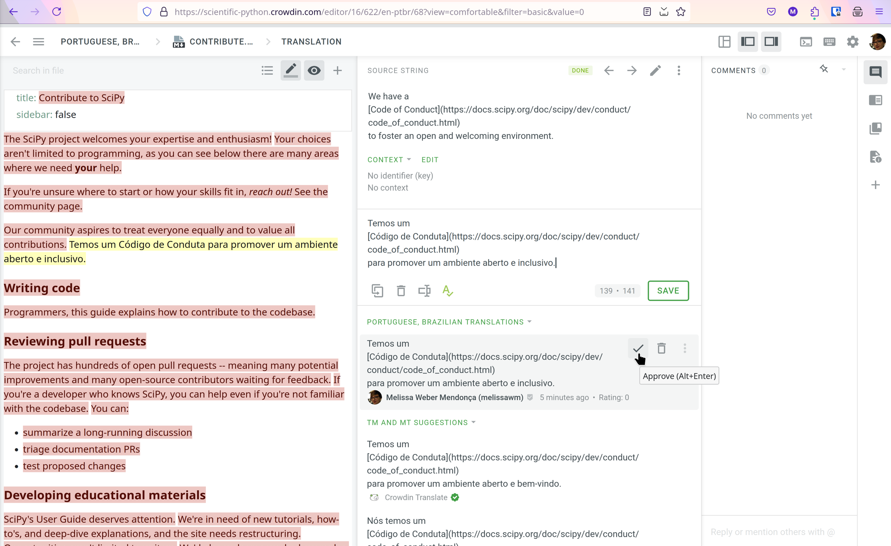
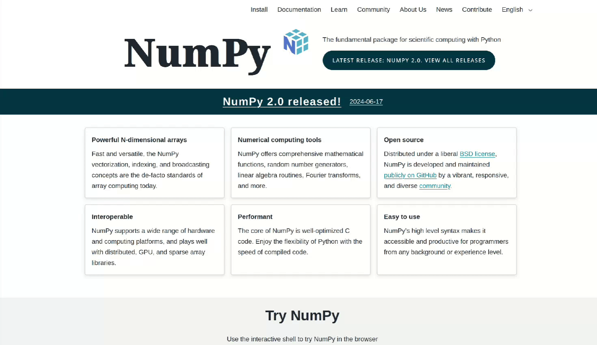

If you want to start translating content for Scientific Python projects, you can use Crowdin to help you manage the translation process. You can see which projects are currently set up with Crowdin in our GitHub project board.
You can also see a similar guide in video format on YouTube.
1. Create Crowdin profile#
First, navigate to https://scientific-python.crowdin.com/ - note you will be logging in to or signing up for a Crowdin Enterprise account.
Create a username and password, or log in with your credentials (if you already have a GitHub account, you can use that to log in).
2. Join the Scientific Python Discord server and ask to be added as a translator#
Join the Scientific Python Discord server and ask to be added as a translator in the #translation channel. This will give you access to the projects that are currently being translated.
3. Select project you want to translate#
In the Crowdin Workspace, select the project you want to work on.

4. Select language you want to translate to#
For each project, there will be a list of languages that the project is currently being translated into. Click on the language you want to translate to.

5. Browse content#
Depending on the project you chose, there will be more or less content to translate. Currently, our goal is to focus on the brochure websites containing basic landing pages, news items and other static content. Full project documentation is not yet available for translation for most projects.
The source content to translate may be in Markdown, HTML, or other formats. You can use the Crowdin editor to translate content directly in the browser.

6. Translate content#
Crowdin provides a user-friendly interface for translating content directly in the browser. The editor will include automatic generated suggestions that you can use as a starting point for your translation. Keep in mind that these translations need human intervention and should be reviewed for accuracy.

7. (Optional) Review and approve translation#
When translations are ready, they can be reviewed by other contributors. This is an optional but recommended step, and it can help ensure that translations are accurate and consistent.

8. See your translations online!#
Once project maintainers are happy with the current state of the translations, they will publish the translations to the project website. You can see an example of this by navigating the NumPy website and switching the language in the top right corner.

Join our translations team!#
If you are interested in helping us translate content, please join the #translation channel on the Scientific Python Discord server. We are always looking for new contributors to help us translate content into different languages. No prior experience is required, although some familiarity with the Scientific Python libraries is recommended.